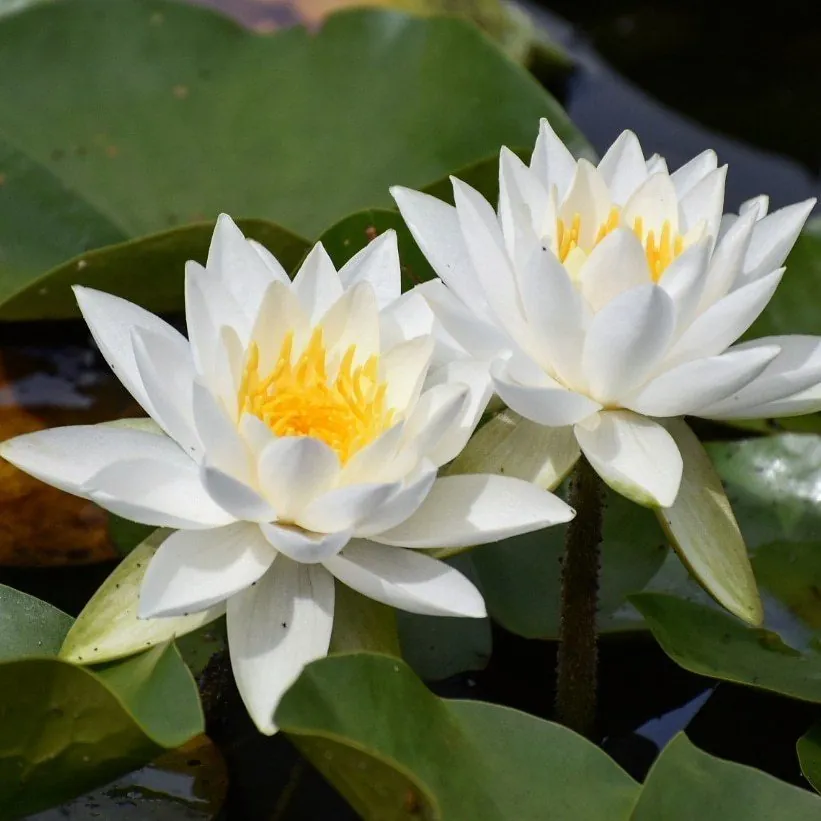

水生植物 · 植物界
埃及蓝睡莲 Nymphaea caerulea

睡莲科多年生浮叶水生草本，花淡蓝色、花瓣尖细，原产尼罗河流域，是古埃及艺术中反复出现的圣花。
- 分类
- 门被子植物门纲木兰纲目睡莲目科睡莲科属睡莲属
- 栖息环境
- 河流缓流区、沼泽与池塘静水，喜强光、温暖、不耐寒
- 地理分布
- 原产东北非尼罗河流域与东非湿地，现热带、亚热带地区广泛栽培
- 保护级别
- 暂无评估；野生居群因湿地开发与过度采挖而下降
物种志
埃及蓝睡莲为睡莲科睡莲属多年生浮叶水生草本，根状茎匍匐于水底泥中。叶片浮于水面，卵圆形，基部有深弯缺，边缘具浅齿，幼叶常带紫色斑。花挺出水面，直径 10–15 厘米，花瓣淡蓝至蓝紫色，狭长而尖端略尖，雄蕊鲜黄色，花期 6–10 月，单朵花晨开午合，可连续开放 3–5 天。
埃及蓝睡莲原产东北非尼罗河流域及东非湿地的静水水域，适宜水深 20–50 厘米，喜强光、温暖与富含腐殖质的底泥，不耐寒。古埃及人将其视为太阳与重生的象征，壁画、柱头与墓葬中大量出现其花形，传说其香气用于宗教仪式。植株含生物碱，民间曾作镇静与止痛之用，但自行服用有风险。如今它是热带睡莲育种的重要亲本，也是水景园中蓝花睡莲的代表。
形态与习性
- 株高浮叶直径 15–25 厘米，花挺水高 10–20 厘米
- 水深适宜水深 20–50 厘米，根状茎需埋入底泥
- 水质喜温暖静水，水温 20–30 ℃ 时生长最旺
- 花期6–10 月，单朵晨开午合，可开 3–5 天
- 耐寒性不耐寒，冬季需保持水温 15 ℃ 以上
- 繁殖根状茎分株或播种
趣味知识
- 古埃及壁画中反复出现的蓝色莲花就是它，被视为太阳神与重生的象征。
- 它的花瓣狭长、尖端略尖，雄蕊鲜黄，与常见睡莲圆润的花形明显不同。
- 花朵晨开午合，单朵可连续开放 3–5 天，香气在清晨最浓。
- 植株含阿朴啡类生物碱，虽有镇静传统用途，但自行泡服可能引起不适，不宜效仿。